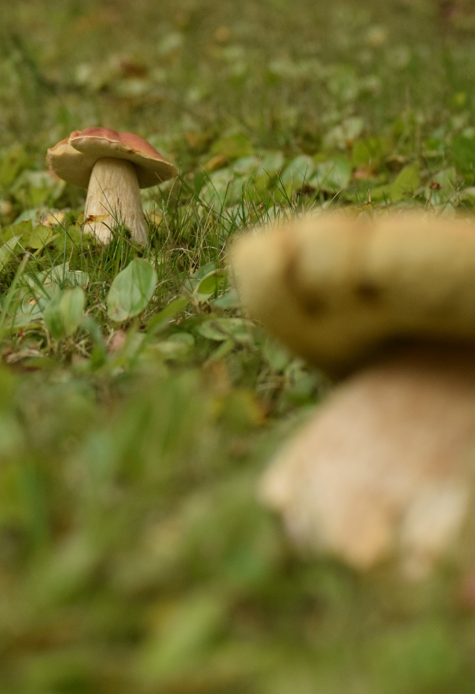
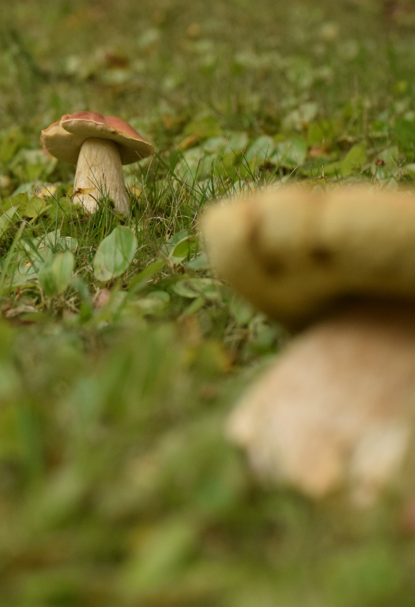
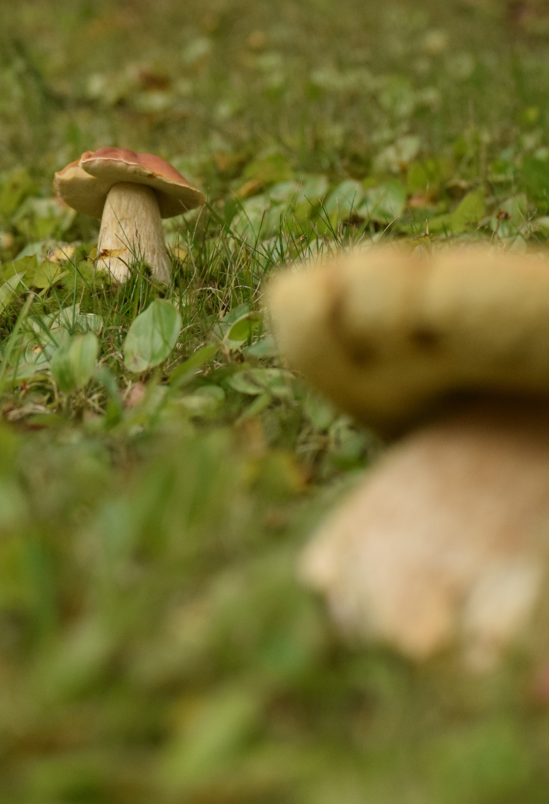
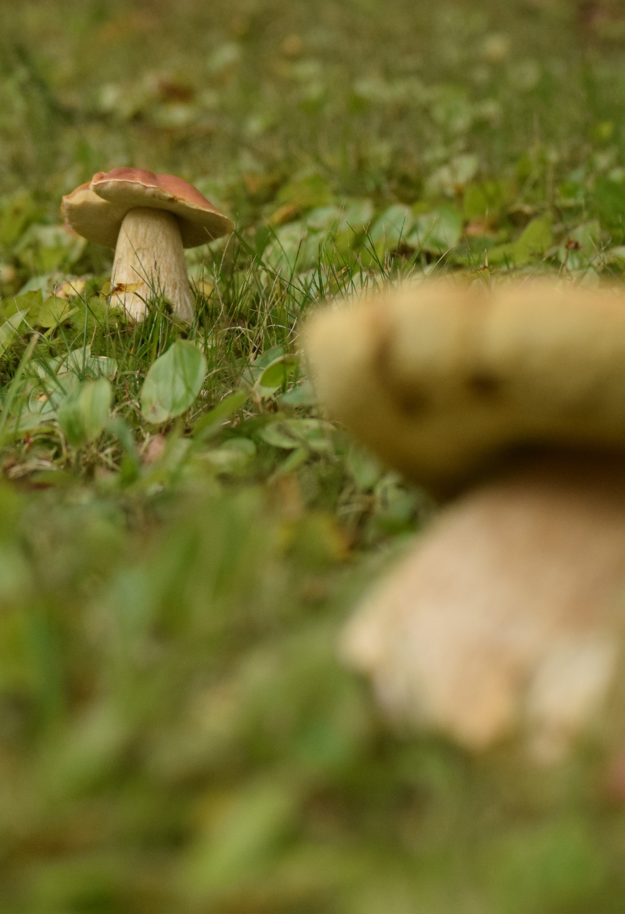

Two unknown mushrooms. Originally found in Haliburton, Ontario.
Found beside each other at my cottage, near the lake in a mossy area.
I am unaware as to what types of mushrooms these are and as to whether or not they were safe to consume.
These mushrooms are now gone and live on only in these photographs.